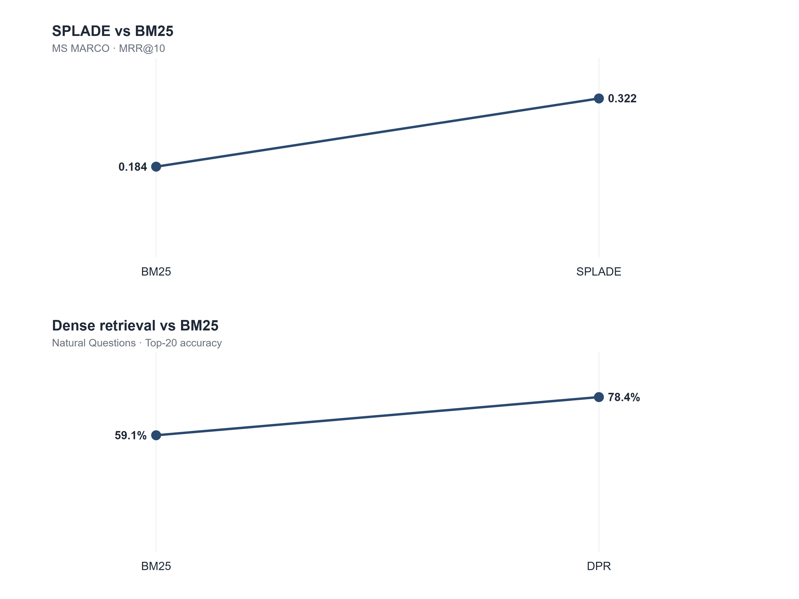
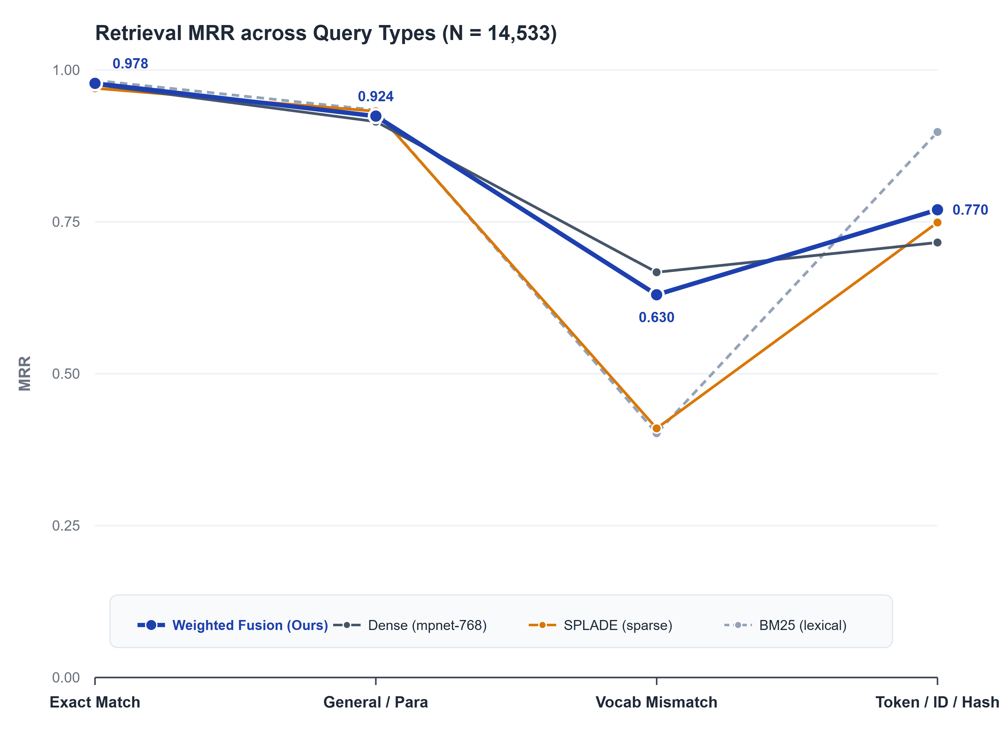
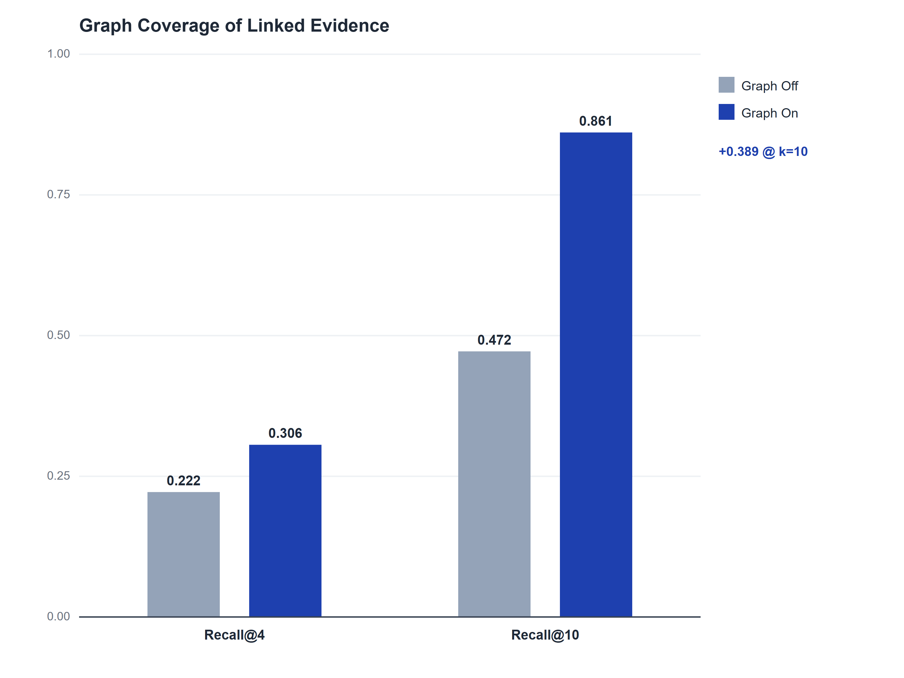
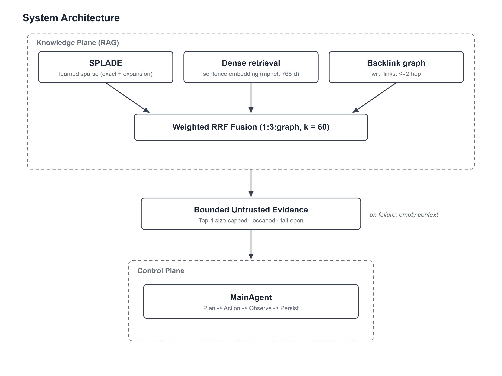
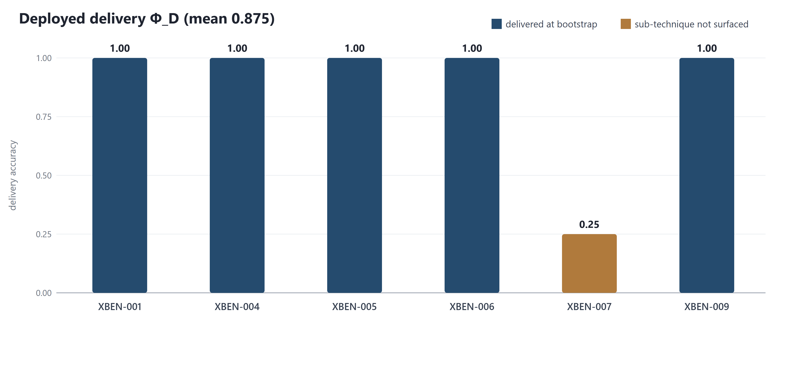
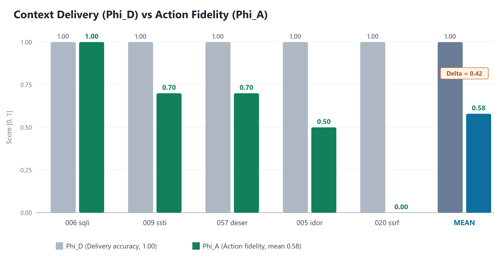
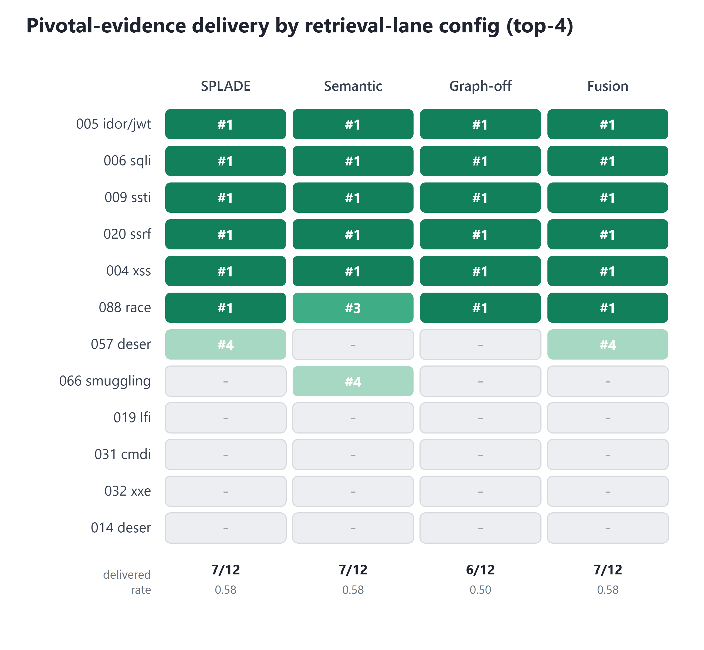
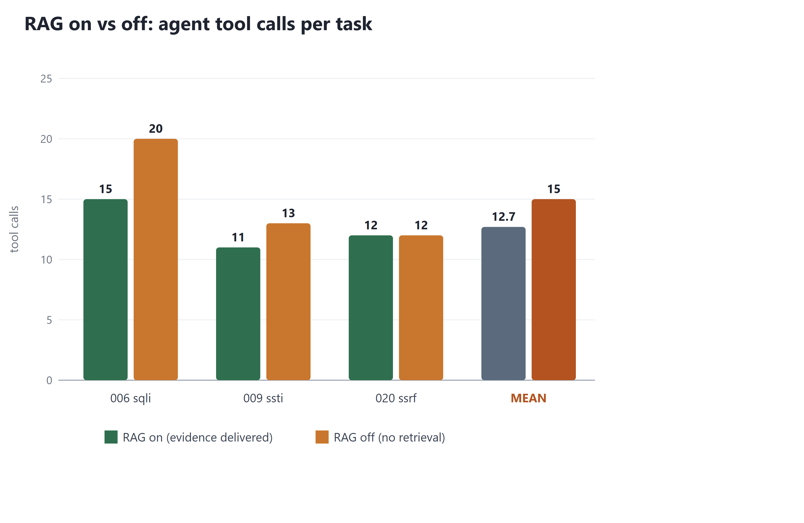

Multi-Signal Retrieval Fusion for Dynamic Context Construction in Autonomous Penetration-Testing Agents and a Delivery-Action Causal Analysis
- 보고일: 2026-08-31
- 문서 유형: 익명화 연구 결과보고서
- 평가 범위: 통제된 XBOW/XBEN 벤치마크 환경
- 주요 지표: 검색 MRR, 문맥 전달 정확도(Φ_D), 행동 충실도(Φ_A), 전달-행동 격차(Δ)
연결 문서: RED Team
한 줄 결론
SPLADE·밀집 임베딩·백링크 그래프를 결합하면 질의 유형별 검색 성능 붕괴를 방어할 수 있지만, 필요한 지식을 완전히 전달한 조건에서도 42%가 실제 도구 실행으로 이어지지 않는 전달-행동 격차가 관측되었다.
연구 질문
이 연구는 두 가지를 묻는다. 첫째, 정확한 단어 검색과 의미 검색, 문서 사이의 연결 관계를 함께 사용하면 질문 표현이 달라져도 필요한 보안 지식을 안정적으로 찾을 수 있는가? 둘째, 필요한 지식을 AI 에이전트에게 정확히 전달하면 그 지식이 실제 도구 실행으로 모두 이어지는가?
SPLADE는 문맥에 맞춰 검색 단어를 넓히는 희소 검색 방식이고, 밀집 임베딩은 문장의 의미가 얼마나 가까운지 비교하는 방식이다. 백링크 그래프는 서로 연결된 문서를 따라 관련 근거를 추가로 찾는다. 아래 본문은 이 세 방식을 결합한 검색 구조와, 검색된 지식이 전달·행동으로 이어지는 과정을 자세히 설명한다.
요약
본 논문은 자율 모의해킹 LLM 에이전트의 핵심 병목인 컨텍스트 구성 문제를 겨냥하여, 보안 지식의 어휘 불일치에 대응하는 동적 컨텍스트 구성 아키텍처를 제안한다. 제안 아키텍처는 학습 기반 희소 검색(SPLADE), 밀집 임베딩(mpnet-768), 백링크 그래프를 가중 상호 순위 융합(RRF)으로 결합하고 fail-open 안전 경계를 적용한다. 에이전트의 성패는 각 공격 상황에 필요한 보안 지식을 제한된 프롬프트 예산 안에 정확히 선별하여 주입하는 능력에 달려 있다. 이를 검증하기 위해 14,533개 질의 전 조합 절제 실험으로 단일 검색기의 유형별 성능 붕괴를 막는 강건한 주입 구조를 확립하고, 지식이 프롬프트에 실제로 전달되었는지(Φ_D)와 그것이 침투 도구 실행으로 이어졌는지(Φ_A)를 분리 측정하는 평가 체계를 수립하였다. 실측 결과 필요 근거를 100% 전달(Φ_D ≈ 1.00)했음에도 실제 도구 실행 비율은 58%(Φ_A ≈ 0.58)에 그쳐, 42%가 활용되지 못하는 전달-행동 격차(Δ = 0.42)를 관측하였다. 정확하고 강건한 지식 전달은 자율 에이전트의 필수 기반이며, 본 연구는 그 전달 품질과 함께, 완벽히 전달된 지식조차 즉각 행동으로 옮기지 못하는 기반 LLM의 인지 병목에서 비롯한 전달-행동 격차까지 정량적으로 드러낸다.
주제어: 자율 모의해킹 에이전트, 동적 컨텍스트 구성, 문맥 전달 정확도, 행동 충실도, 전달-행동 격차, SPLADE, RAG
1. 서론
자율 모의해킹 에이전트는 정찰, 취약점 분석, 공격 도구 실행, 증거 수집에 이르는 침투 전 과정을 다중 턴에 걸쳐 스스로 수행한다. 그러나 대상 시스템의 기술 스택과 공격 상황이 실시간으로 변하고, 정찰 과정에서 개방 포트, 서비스 배너, 오류 응답 같은 단서가 비동기적으로 쏟아지기 때문에, 에이전트가 이 잡음 속에서 매 턴 올바른 다음 도구를 결정하는 것은 여전히 어려운 문제다.
에이전트의 모든 행동은 프롬프트에 주입된 지식을 바탕으로 한 도구 호출로 귀결되므로, 그 성패는 결정 시점에 프롬프트에 어떤 지식이 놓여 있는지에 달려 있다. 그런데 참조해야 할 보안 플레이북과 과거 세션 이력은 방대하여 제한된 프롬프트 예산 안에 상시 유지할 수 없다. 따라서 각 상황에 필요한 지식만 선별하여 프롬프트를 매 턴 새로 구성하는 동적 컨텍스트 구성이 핵심 병목이며, 이를 담당하는 검색·전달 계층이 필수적이다 [1, 10]. 여기서 가장 큰 검색 난점은 어휘 불일치다. 동일한 취약점이라도 “인증 우회”와 “authentication bypass”, “템플릿 주입”과 “SSTI”처럼 표현이 달라 단순 키워드 매칭이 실패한다.
선행 연구 PentestGPT는 이러한 문맥 손실을 핵심 난점으로 지적하였다 [10]. 본 연구는 이를 단순 검색의 한계가 아니라 프롬프트 전달과 그 이후의 행동 문제로 재정의하고, 검색에서 전달, 전달에서 행동으로 이어지는 3단계로 분해하여 각 단계의 격차를 직접 실측한다는 점에서 구별된다. 검색 가능성이 곧 전달을 뜻하지 않으며, 전달이 곧 올바른 행동으로 직결되지도 않는다.
연구 범위는 통제 가능한 대상으로 한정한다. 올바른 지식을 강건하게 선별·전달하는 검색·전달 아키텍처와 그 전달-행동 격차의 측정에 집중하며, 주입된 지식을 실제 실행으로 옮기는 기반 LLM 자체의 인지·추론 역량은 통제할 수 없는 변수로 보아 최적화 대상에서 제외한다. 평가 도메인으로 모의해킹을 택한 이유는 각 행동의 성공·실패를 트랜스크립트의 도구 호출 로그로 객관적으로 판별할 수 있어, 컨텍스트 구성이 실제 행동으로 이어졌는지를 흔들림 없이 측정할 수 있기 때문이다.
본 연구의 주요 기여는 다음과 같다.
- 어휘 불일치와 토큰·식별자 검색에 두루 강건한 다중 신호 지식 평면 및 fail-open 안전 전달 아키텍처를 설계하고 대규모 실험으로 확정한다.
- 지식이 프롬프트에 올바르게 배치되었는지를 측정하는 전달 정확도(Φ_D)와 실제 침투 도구 호출로 이어졌는지를 평가하는 행동 충실도(Φ_A) 평가 체계를 수립한다.
- 실제 침투 과제 실측으로 지식 전달과 침투 도구 실행의 연계를 정량화하고, 완벽한 전달 조건에서도 남는 전달-행동 격차(Δ)를 측정한다. 본 연구는 통제 가능한 영역인 지식 전달 구조와 격차 측정에 집중하며, 기반 LLM 자체의 인지·추론 역량 최적화는 통제 밖의 변수로 명확히 한정한다.
1.1 관련 연구
에이전트를 위한 RAG. 생성 모델을 외부 비모수 메모리와 결합하는 RAG는 지식 집약 과제의 표준으로 자리잡았다 [1]. 자율 모의해킹 맥락에서 선행 연구 PentestGPT는 단순 명령 생성을 넘어선 전체 상황 파악과 문맥 손실을 핵심 난점으로 지목하였다 [10]. 본 연구는 이 문맥 손실을 단순 검색의 한계가 아닌 프롬프트 전달의 문제로 재정의하고, 전달 품질을 직접 측정한다.
희소 및 밀집 검색과 융합. 확률적 어휘 검색 BM25 [5]는 정확 토큰에 강하나 어휘 불일치에 취약하다. 학습 기반 희소 검색 SPLADE는 정확 토큰을 보존하면서 문맥에 따라 어휘를 확장하여 이 격차를 줄이고 [2], 밀집 검색 DPR과 Sentence-BERT는 의미 유사도로 어휘 격차를 메운다 [3, 6]. 이질적 점수를 순위 기반으로 결합하는 RRF는 개별 검색기와 대안적 융합을 능가한다 [4]. 본 연구는 이들을 조합하되, 대규모 실측을 통해 각 신호의 상보성을 규명하고 가중치까지 데이터로 확정한다.
그래프 보강 검색. 텍스트 그래프는 평면적 문서 집합보다 근거 추적성과 응답 품질을 높인다 [8, 9]. 본 연구는 그래프를 정답 순위가 아닌 관련 근거 커버리지의 축으로 활용하고, 확장 홉 수를 컨텍스트 예산과 함께 보수적으로 확정한다.
RAG 평가와 안전 경계. RAGAS 등은 단발 질의응답에서 답변 충실도와 문맥 관련성을 채점하나 [11], 다중 턴 에이전트가 매 턴 조립하는 배포 프롬프트에 필요 근거가 실제로 전달되었는가는 측정하지 못한다. 한편 외부 지식에 포함된 간접 프롬프트 주입이 제어 흐름을 침해할 수 있음이 보고되었다 [12]. 본 연구의 평가 체계(Φ)는 검색 가능성과 실제 전달의 격차를 정면으로 측정하며, 검색 문서를 신뢰 불가 증거로 다루고 크기 제한과 fail-open 경계로 격리한다.
2. 문제 정의
플래그 획득 여부는 최종 결과만 판별할 뿐, 실패의 원인이 프롬프트 지식 부재에 있었는지 아니면 지식을 주고도 모델이 활용하지 못한 데 있었는지를 설명하지 못한다. 기존 RAG 평가 지표 역시 단발성 질의응답의 답변 충실도에 집중되어 있어, 다중 턴 에이전트 환경에서 필수 지식이 실제 배포 프롬프트에 주입되었는지와 이것이 침투 도구 실행으로 이어졌는지를 정밀하게 측정하지 못한다 [11].
본 연구는 이 문제를 검색에서 전달(Φ_D), 전달에서 행동(Φ_A)으로 이어지는 세 단계로 분해하여, 각 단계에서 나타나는 실패를 구분한다. 검색 단계에서는 질의와 문서의 표현이 어긋나는 어휘 불일치로 필요 지식이 후보에서 누락되고, 단일 검색기가 특정 질의 유형에서 급락하여 유형별 사각지대가 생긴다. 전달 단계에서는 지식이 검색되더라도 공격 상황과 어긋나 상위 예산(Top-4) 밖으로 밀리면 프롬프트 주입에 이르지 못한다. 이 세 가지는 검색·전달 계층이 책임지는 통제 가능한 문제로, 3절의 지식 평면으로 방어하거나 상황에 맞춰 질의를 다시 구성해 보완한다.
그러나 지식을 완벽히 전달한 뒤에도 남는 손실이 있다. 정답 지식을 프롬프트에서 받고도 에이전트가 도구 실행으로 옮기지 못하는 전달-행동 격차이며, 이는 검색 시스템의 결함이 아니라 기반 LLM의 인지 병목이다. 본 연구는 전자를 아키텍처로 해결하고, 후자를 최적화 대상이 아니라 4절의 평가 체계로 정량 관측하는 관측치로 위치시킨다.
3. 연구: 지식 평면 아키텍처
3.1 점진적 진화를 통한 도출
제안하는 지식 평면은 각 검색 기법의 한계를 실험적으로 규명하고 이를 보완해 나간 점진적 진화 과정을 통해 도출되었다. 선행 연구의 일반적 우위는 표준 벤치마크 문헌을 인용하되, 최종 구성은 보안 도메인 실측 데이터로 확정하였다.
초기 지식은 마크다운 문서로 구축되었으며, 위키링크와 백링크를 통해 절차적 관계를 그래프로 구조화하였다. 텍스트 그래프가 평면적 문서보다 질의응답 품질과 근거 추적성을 높인다고 선행 연구가 보고하였다 [8, 9]. 그러나 링크 항해만으로는 임의 질의에 대응할 수 없어 BM25 어휘 검색을 추가하였다 [5]. BM25는 질의와 문서 간 공통 토큰이 없으면 검색이 실패하는 어휘 의존성을 남겼다. 이를 보완하기 위해 문장 임베딩 기반의 밀집 의미 검색을 도입하였고 [3], 모델 비교를 통해 어휘 불일치 대응력이 가장 우수한 all-mpnet-base-v2(768차원)를 채택하였다. 이질적인 점수 체계를 순위 기반으로 결합하기 위해 상호 순위 융합(RRF, k=60)을 적용하였으며 [4], 백링크 그래프는 어휘 검색 상위 결과를 시드로 2-hop 확장하여 융합에 통합하였다. 세 경로를 융합한 후에도 어휘 검색과 그래프 시드가 공유하는 어휘 의존성이 잔존하여, 정확 토큰 보존과 문맥 기반 어휘 확장을 겸비한 SPLADE [2]로 BM25를 전면 교체하였다. 구체 체크포인트로는 SPLADE++ 계열의 Splade_PP_en_v2를 채택하였으며, 이하 표와 본문의 SPLADE 레인은 모두 이 모델을 가리킨다.
3.1.1 저장 및 실행 구조의 경량화
검색 정확도만큼 중요한 설계 조건은 에이전트 프로세스 안에서 가볍게 재현되는가였다. 초기 밀집 검색 프로토타입은 외부 VectorDB에 임베딩을 적재하는 구조였다. 이 구조는 대규모·다중 사용자 환경에서는 인덱스 영속성과 분산 검색에 유리하지만, 본 실험처럼 204개 노트를 반복 평가하는 로컬 환경에서는 별도 서버 프로세스, 클라이언트 드라이버, 스키마와 수명주기 관리가 추가되었다. 검색 계층 하나를 검증하기 위해 에이전트 외부의 상태와 장애 지점까지 함께 관리해야 했고, 이는 실험 재현성과 배포 단순성이라는 목표에 맞지 않았다.
따라서 최종 프로토타입은 외부 VectorDB를 제거하고 세 인덱스를 시작 시점에 인메모리로 구성한다. Markdown 원문과 frontmatter는 기준 데이터로 유지하고, SPLADE 희소 벡터는 역색인, 밀집 임베딩은 정규화된 행렬, 백링크는 인접 목록으로 읽는다. 검색 결과는 RRF에서 문서 식별자와 순위만 결합한다. 이 선택은 외부 VectorDB의 일반적 효용을 부정하는 것이 아니라, 작은 로컬 코퍼스에서 프로세스 수와 의존성을 줄이고 동일 체크섬의 인덱스를 매 실행마다 재구성하기 위한 범위 최적화다. 코퍼스가 메모리 한계를 넘거나 여러 작업자가 인덱스를 공유해야 하는 시점에는 외부 저장소가 다시 합리적인 선택이 된다.
| 진화 단계 | 해결하려던 문제 | 관측된 한계 | 다음 선택 |
|---|---|---|---|
| Markdown + 백링크 | 지식의 출처와 절차 관계 보존 | 임의 자연어 질의의 시작점을 찾기 어려움 | BM25 추가 |
| BM25 | CVE, 해시, 명령어 같은 정확 토큰 검색 | 질의와 문서의 공통 어휘가 없으면 점수가 0에 가까워지는 절벽형 실패 | 밀집 표현 추가 |
| 외부 VectorDB + 밀집 검색 | 표현이 다른 문장의 의미 검색 | 별도 프로세스·드라이버·스키마 의존성과 실험 수명주기 증가 | 인메모리 행렬 검색 |
| 인메모리 밀집 + BM25 | 로컬 단일 프로세스 경량화 | 어휘 레인은 여전히 표면 토큰에 종속 | SPLADE로 교체 |
| SPLADE + 밀집 + 그래프 | 어휘 확장, 의미 유사도, 관계 회수를 동시 확보 | 세 점수의 척도가 서로 다름 | 가중 RRF로 순위 융합 |
flowchart LR A[Markdown 지식 볼트] --> B[위키링크·백링크] B --> C[BM25 정확 어휘] C -->|어휘 불일치| D[밀집 임베딩] D -->|외부 프로세스·의존성 증가| E[인메모리 벡터 행렬] C -->|0점 절벽 완화| F[SPLADE 어휘 확장] B --> G[2-hop 그래프 확장] E --> H[가중 RRF] F --> H G --> H H --> I[Top-4 신뢰 불가 근거] I --> J[모의해킹 에이전트]
밀집 표현도 단순히 가장 작은 모델을 택하지 않았다. 384차원의 all-MiniLM-L6-v2, bge-small-en-v1.5, gte-small, e5-small-v2를 먼저 비교해 로컬 실행 후보를 좁힌 뒤, 768차원 all-mpnet-base-v2가 추가 메모리 비용을 감수할 만큼 어휘 불일치와 전체 MRR에서 우세한지 확인하였다. 희소 레인 역시 이름만 SPLADE로 정하지 않고 Splade_PP_en_v1과 Splade_PP_en_v2를 같은 147질의 셋에서 비교했다. 즉 최종 구성은 “무조건 작은 모델”이 아니라, 외부 서비스를 없앤 뒤 단일 프로세스 안에서 감당 가능한 모델 중 최악 질의 유형의 바닥 성능을 가장 잘 방어하는 조합이다.

(그림 1) 선행 연구가 표준 벤치마크로 보고한 검색 기술 발전 단계. 마크다운 그래프(환각 -54%), BM25(키워드), 밀집 임베딩(NQ +19.3%p), RRF(순위 융합), SPLADE(어휘 확장, MRR +75%)로 진화하며 정보 검색 정확도가 점진적으로 상승함을 보여준다(원 문헌 기준). 본 연구의 진화 경로가 임의 선택이 아니라 문헌적 근거 위에 서 있음을 나타낸다.
3.2 대규모 절제 실험과 신호 상보성
최종 구조를 확정하기 위해, 204개 보안 기법 노트(수기 클루 11개, 방해 노트 193개)로 이루어진 코퍼스에 사전 등록된 14,533개 질의를 4개 유형으로 층화하여 전 조합 절제 측정을 수행하였다(표 1, 그림 2). 평가 질의셋은 각 노트의 제목, 태그, 본문에서 기법명, 식별자, 절차 표현을 추출하여 유형별로 구성하였으며, 어휘 불일치 유형은 동의어 및 의역 표현으로 치환하여 코퍼스 어휘와의 표면적 중복을 배제하였다.
(표 1) 검색 구성별 유형 MRR (204노트, 14,533개 사전등록 질의, k=10)
| 구성 | 정확 | 일반 | 어려움(어휘불일치) | 토큰(ID/해시) | 전체 | 최악(floor) |
|---|---|---|---|---|---|---|
| BM25 | 0.983 | 0.934 | 0.402 | 0.898 | 0.884 | 0.402 |
| SPLADE | 0.970 | 0.932 | 0.410 | 0.749 | 0.880 | 0.410 |
| 밀집 (mpnet-768) | 0.976 | 0.915 | 0.667 | 0.716 | 0.898 | 0.667 |
| SPLADE+밀집 (가중 융합) | 0.978 | 0.924 | 0.630 | 0.770 | 0.901 | 0.630 |
질의는 표현이 정답과 일치하는 정확, 평이한 일반, 동의어나 의역으로 표현이 어긋난 어휘 불일치(표현의 어려움), 식별자나 해시 같은 정확 문자열의 토큰 네 유형으로 나뉜다. 전체는 네 유형을 합친 평균이고, 최악(floor)은 유형별 최저 MRR로 그 구성이 가장 못하는 유형에서의 바닥 성능이다. 표 1을 보면 어느 단일 신호도 전 질의 유형에서 최고 성능을 내지 못한다. 어휘 신호(BM25, SPLADE)는 정확 토큰과 식별자에 강하나 어휘 불일치에서 0.40대로 급락하고, 밀집 의미 검색은 반대로 어휘 불일치에 최강(0.667)이나 식별자·해시에서 0.716으로 약화된다.

(그림 2) 질의 유형별 검색 강건성 (1.4만 질의 전 조합 절제 실험). 1:3 가중 융합은 어휘 불일치에서 밀집 대비 0.037을 내주는 대신 토큰에서 0.054를 회수하여 유형 간 편차를 줄인다. 전체 MRR 0.901은 밀집 단독(0.898)과 유의한 차이라 보기 어려우며, 융합의 가치는 이 평균 이득이 아니라 단일 신호의 유형별 급락을 완화하는 강건성에 있다.
BM25를 SPLADE로 교체한 근거 역시 표 1의 평균 상승이 아니다. 이 본문이 짧은 방해 노트(distractor) 코퍼스에서는 두 어휘 신호의 전체 점수가 0.884 대 0.880으로 수렴하며, 이 점은 5절에서 자인한다. 교체의 실제 근거는 정확 토큰을 보존하면서 문맥으로 어휘를 확장하는 SPLADE의 학습 기반 강건성 [2]과, 보다 풍부한 실제 볼트에서 그 강건성이 온전히 발현될 가능성에 있다.
3.3 구성요소 선택 (모델, 차원, 홉, 융합 가중)
아키텍처의 큰 틀을 고정한 상태에서 내부 세부 파라미터를 실측 데이터로 확정하였다(표 2~5). 이들 세부 절제는 표 1과 규모가 다른 147질의 소규모 셋이라 전체 MRR 절대값이 표 1과 다르다.
(표 2) 밀집 임베딩 모델 및 차원 비교 (204노트, 147질의, MRR)
| 모델 | 차원 | 어려움 | 토큰 | 전체 | 최악 |
|---|---|---|---|---|---|
| all-MiniLM-L6-v2 | 384 | 0.633 | 0.732 | 0.816 | 0.633 |
| bge-small-en-v1.5 | 384 | 0.639 | 0.602 | 0.806 | 0.602 |
| gte-small | 384 | 0.632 | 0.681 | 0.828 | 0.632 |
| e5-small-v2 | 384 | 0.597 | 0.662 | 0.805 | 0.597 |
| all-mpnet-base-v2 | 768 | 0.764 | 0.721 | 0.856 | 0.721 |
768차원 mpnet이 어휘 불일치(0.764)와 전체 성능(0.856)에서 전 모델 중 가장 우수하여 최종 채택되었다. 유형 정의는 표 1을 따르되, 정확과 일반 유형은 전 모델이 높아 변별력이 없어 생략하고 변별력 있는 어휘 불일치와 토큰만 표시한다.
(표 3) SPLADE 모델 비교 (204노트, 147질의, MRR)
| 모델 | 정확 | 일반 | 어려움 | 토큰 | 전체 | 최악 |
|---|---|---|---|---|---|---|
| Splade_PP_en_v2 | 0.978 | 0.854 | 0.519 | 0.749 | 0.790 | 0.519 |
| Splade_PP_en_v1 | 0.956 | 0.820 | 0.486 | 0.784 | 0.769 | 0.486 |
동일 SPLADE 계열 내에서는 v2가 v1 대비 어휘 불일치(0.519 대 0.486)와 전체 MRR(0.790 대 0.769) 모두에서 우세하여 Splade_PP_en_v2를 최종 채택하였다. 표 1의 SPLADE 레인 전체 MRR(0.880)과 본 표의 v2 전체 MRR(0.790)은 같은 Splade_PP_en_v2를 각각 14,533질의와 147질의로 측정한 값이라 다르며, 오타가 아니다.
(표 4) 그래프 확장 홉 수 비교 (백링크 BFS)
| 홉 | 평균 확장 노트 수 | 동일 카테고리 커버리지 |
|---|---|---|
| 1 | 3.65 | 0.556 |
| 2 | 4.13 | 0.595 |
| 3 | 4.16 | 0.595 |
그래프 확장은 동일 카테고리 커버리지가 2-hop에서 포화(0.595)되므로, 컨텍스트 예산 낭비를 방지하기 위해 2-hop으로 보수적으로 확정하였다.
(표 5) RRF 융합 가중치 비교 (204노트, 147질의, MRR)
| 융합 비율 (splade:mpnet) | 어려움 | 토큰 | 전체 | 최악 |
|---|---|---|---|---|
| 단독 mpnet | 0.764 | 0.717 | 0.855 | 0.717 |
| 1:1 (균등) | 0.667 | 0.739 | 0.836 | 0.667 |
| 1:3 (가중) | 0.763 | 0.731 | 0.865 | 0.731 |
| 1:4 | 0.756 | 0.731 | 0.863 | 0.731 |
균등(1:1) 융합은 어휘 불일치 최악값을 0.667로 떨어뜨리는 반면, 1:3 가중은 어휘 불일치(0.763)를 단독 mpnet 수준으로 지키면서 전체(0.865)를 끌어올려 최종 채택하였다.
3.4 그래프의 관련 근거 커버리지
그래프의 가치는 단순 순위 상승이 아니라 연관된 기법 집합을 함께 회수하는 커버리지에 있다(표 6, 그림 3).
flowchart LR Q[현재 정찰 질의] --> S[텍스트 검색 시드] S --> H0[0-hop: 직접 일치 노트] H0 --> H1[1-hop: 선행·후속 기법] H1 --> H2[2-hop: 함께 필요한 근거] H2 -. 3-hop 추가 이득 없음 .-> H3[3-hop: 예산만 증가] H0 --> R[후보 집합] H1 --> R H2 --> R R --> F[RRF 융합]
홉 실험은 “더 멀리 가면 더 많은 지식을 얻는다”는 가정을 직접 검증한다. 1-hop은 시드 노트의 직접 연결만 회수하고, 2-hop은 그 이웃의 연결까지 확장한다. 3-hop은 평균 노트 수를 4.13에서 4.16으로 늘렸지만 동일 카테고리 커버리지는 0.595에서 더 오르지 않았다. 따라서 2-hop을 관계 회수의 포화점으로 정하고, 3-hop 이상은 제한된 Top-4 프롬프트 예산을 희석하는 과잉 확장으로 판단하였다.
(표 6) 그래프 활성화에 따른 관련 근거 커버리지 향상
| 지표 | 그래프 OFF | 그래프 ON |
|---|---|---|
| 관련 노트 Recall@4 | 0.222 | 0.306 |
| 관련 노트 Recall@10 | 0.472 | 0.861 |

(그림 3) 주 기법 검색 시 연관 공격 기법이 함께 동반 검색되는 커버리지(Recall@10). 텍스트 유사도만으로는 닿지 않는 연결 기법들을 백링크 그래프(2-hop)가 살려 기법 회수율을 0.472에서 0.861로 1.8배 끌어올린다.
3.5 시스템 구조 및 안전 경계
제안 시스템은 메인 에이전트의 제어 흐름을 침해하지 않으면서 필요한 지식을 작업 메모리에 주입하는 비침습적 분리 구조를 취한다(그림 4). 메인 에이전트가 입력 전처리, 상태 전이, 도구 실행, 세션 수명주기의 단일 소유권을 유지하므로, 지식 계층이 비활성화되더라도 에이전트의 기본 동작은 안전하게 유지된다.

(그림 4) 제안하는 동적 컨텍스트 구성 시스템 아키텍처. 희소(SPLADE)·밀집(mpnet)·그래프의 3개 검색 경로를 1:3 가중 순위 융합(RRF)으로 결합하고, 검색 장애 시에도 에이전트 실행이 중단되지 않도록 fail-open 안전 경계로 격리하여 크기 제한된 신뢰 불가 증거로 주입한다.
실행 안전성은 세 가지 구조적 계약으로 보장된다. 첫째, 신뢰 불가 증거 취급으로, 주입 문서를 외부 신뢰 불가 데이터로 명시하고 특수문자를 이스케이프하며 타임아웃과 최대 주입 건수(Top-4)로 프롬프트 표면을 제한한다. 둘째, 장애 허용(fail-open)으로, 검색 장애 발생 시 경고를 기록하고 빈 문맥으로 축소하여 에이전트 실행을 지속하며, 개별 경로의 장애가 타 경로 결과를 배제하지 않는다. 셋째, 결정론적 재현성으로, 검색 자산을 체크섬으로 고정하고 정적 스코어링 규칙을 적용한다. 구현 규모는 124개 파일과 1,113개 단위·통합 테스트로 Docker 컨테이너 구동을 통해 재현을 확인하였으며, 이는 연구 근거가 아니라 개발 산출물 지표로만 제시한다.
4. 평가 설계 및 실측
4.1 지식 전달 및 행동 지표 (Φ)
본 연구는 지식 전달(Φ_D)에서 행동 충실도(Φ_A)로 이어지는 2단계 평가 체계를 수립한다. 전달 정확도 Φ_D는 해당 침투 단계에 필요한 정답 지식이 프롬프트 상위(Top-4)에 실제로 주입되었는지를 측정한다.
여기서 N은 지식 볼트에 존재하며 해당 문제 해결에 필요했던 핵심 지식 집합, w_i는 지식 i의 중요도 가중치(w_i > 0), r_i는 지식 내용의 정확성(r_i ∈ [0,1], 볼트 내 정답 지식이므로 통상 1.0), d_i는 프롬프트 실제 주입 여부(d_i ∈ {0,1}, 상위 4건 내 주입 시 1, 누락 시 0)이다.
행동 충실도 Φ_A는 프롬프트에 지식을 쥐어준 후 에이전트가 그 지식을 활용하여 실제 올바른 침투 도구를 호출했는지를 행동 게이트 a_i ∈ [0,1]로 결합하여 측정한다.
행동 점수 a_i는 지식 주입 후 해당 침투 도구를 최초로 호출하기까지 걸린 턴 수(L_i)에 따라 시간 감쇄를 적용한다.
즉 1턴에 즉시 도구를 호출하면 1.0점 만점이며, 탐색 과정으로 4번째 턴에 호출하면 0.7점으로 부분 인정된다. 판정의 객관성을 위해 트랜스크립트 기반 1차 자동 채점 후 저자가 원시 도구 실행 로그(페이로드 및 HTTP 요청)를 전수 확인하였으며(2단계 검증, Cohen’s κ = 1.00), 프롬프트에 지식을 주입하고도 에이전트가 오탐이나 지연으로 활용하지 못한 손실분은 전달-행동 격차 Δ = Φ_D − Φ_A ≥ 0으로 정량화된다.
4.2 전달 품질 실측
대표 XBOW 과제 [13]에 에이전트를 구동하여 전달 품질을 실측하였다. 정제 질의 기준 필요 근거는 모두 순위 1위로 검색되었으며(r=1.0), 단발 부트스트랩은 상위 4건 주입을 통해 6개 과제에서 평균 Φ_D ≈ 0.875를 달성하였다(그림 5). 이 값은 초기 소표본 부트스트랩 환경(방해 노트를 포함한 볼트, 6과제)에서의 전달 품질이다.
그러나 복합 근거가 필요한 XBEN-007(GraphQL 열거, IDOR, 무차별 대입 필요)에서는 단일 목표 질의가 필요한 여러 기법을 다 겨냥하지 못해 GraphQL 기법이 상위 4위 밖으로 밀려났다(전달 실패, d=0). 그 결과 에이전트는 올바른 도구 호출로 나아가지 못하고 실패하였으며, Φ_D는 0.25로 급락하였다. 이는 Φ_D가 검색 가능성과 실제 프롬프트 주입 실패를 분리하여 포착함을 보여준다.

(그림 5) 실제 침투 과제별 지식 전달 정확도(Φ_D, 초기 6과제). 단일 목표 과제는 100%(Φ_D=1.00) 지식을 주입했으나, 복합 근거 과제(XBEN-007)는 단일 질의가 필요한 여러 기법을 다 겨냥하지 못해 25%만 주입되어(Φ_D=0.25) 전달 실패가 침투 실패로 직결되는 병목을 드러낸다.
4.3 전달에서 행동까지: 전달-행동 격차의 실측
OWASP Top 10에 정렬된 대표 12과제를 대상으로 204노트 볼트와 배포 스택(SPLADE, mpnet-768, 백링크 그래프, MiniMax-M3)에서 전달(Φ_D)과 행동(Φ_A)을 확장 실측하였다(그림 6). 앞의 부트스트랩 6과제(그림 5)와 본 12과제는 볼트 규모·과제 집합·모델이 다른 별개 환경이므로, 두 Φ_D 수치를 동일 축의 개선으로 해석해서는 안 된다. 각각 초기 부트스트랩과 확장 배포라는 상이한 상황의 전달 품질을 보고하며, 본 절의 초점은 절대치 비교가 아니라 확장 환경에서 드러나는 전달-행동 격차(Δ)에 있다.
12과제 중 핵심 근거가 정상 전달된 5개 과제를 대상으로 행동 연계를 분석하면, 전달 지표는 Φ_D ≈ 1.00이었으나 실제 올바른 침투 도구 호출로 이어진 행동 지표는 평균 Φ_A ≈ 0.58에 그쳤다. 즉 Δ = 0.42에 달하는 지식이 프롬프트에 주입되었음에도 에이전트의 오탐·지연으로 인해 즉각 활용되지 못하였다. 예컨대 XBEN-006(SQLi)은 지식을 전달받아 1턴에 즉시 공격 도구를 실행하였으며(a=1.0), XBEN-020(SSRF)은 근거를 1위로 주입받았음에도 정찰만 반복하고 익스플로잇 도구를 호출하지 않아 a=0을 기록하였다. 반면 XBEN-009(SSTI)와 XBEN-057(역직렬화)은 4번째 턴에 올바른 도구를 실행하여 턴 감쇄가 적용된 a=0.7을 얻었고, XBEN-005(IDOR/JWT)는 IDOR는 즉시 활용했으나 JWT 권한 상승은 시도하지 않아 과제 평균 a=0.5였다. 이 다섯 과제의 평균이 Φ_A ≈ 0.58이다(1.0, 0.7, 0.7, 0.5, 0).

(그림 6) 지식 전달(Φ_D) 대 실제 행동(Φ_A) 비교. 5개 과제에서 힌트 전달률은 100%(Φ_D=1.00)였으나 에이전트가 실제 공격 도구를 실행한 비율(MEAN, 전체 평균)은 58%(Φ_A=0.58)에 그쳤다. 상단의 Δ=0.42는 힌트를 주고도 오탐·지연으로 낭비된 42%의 지식-행동 손실 격차이며, 이는 검색 시스템의 결함이 아니라 완벽히 전달된 지식조차 즉각 행동으로 옮기지 못하는 기반 LLM의 인지 병목을 나타낸다.
4.4 레인 구성별 전달 거동 및 질의 적합성 분석
12개 과제를 대상으로 검색 레인(어휘, 밀집, 그래프) On/Off 조합 4종을 비교 측정한 결과(그림 7), 질의에 기법 어휘가 명시된 과제는 전 레인이 1위로 정답을 전달하였고, 난이도가 높은 과제에서는 레인 간 상보성이 두드러졌다(역직렬화는 SPLADE만, 요청 스머글링은 밀집 검색만 포착). 그러나 일부 과제(019, 031, 032, 014)는 4개 구성 모두 정답을 놓쳤는데, 이는 검색기의 한계가 아니라 초기 문제 설명문에 기법 관련 어휘가 전무하여 질의가 정답 기법을 겨냥하지 못한 데 기인하였다. 이는 전달 품질을 더욱 높이기 위해 향후 상황에 맞춰 질의를 다시 구성하는 정책이 필수적임을 시사한다.

(그림 7) 검색 레인 조합별 핵심 지식 전달 성공률(Top-4). 단순한 문제는 전 레인에서 100% 전달하지만, 난이도가 높은 공격(역직렬화, HTTP 스머글링)은 SPLADE와 밀집 검색이 상호 보완해야만 전달에 성공한다. 4개 조합 모두 실패한 과제들은 초기 지문에 단서가 없어 질의가 정답 기법을 겨냥하지 못하기 때문이다.
4.5 지식 전달의 탐색 효율 기여
지식 주입이 탐색 효율에 주는 영향을 반사실 개입으로 살폈다. 먼저 개별 핵심 근거 노트 1개를 제거하는 반사실 개입에서, 기반 모델의 기존 지식 및 단일 실행 편차로 인해 행동 정렬 점수의 직접 인과는 확증되지 않았으나, 핵심 근거 제거 시 도구 호출(불필요한 탐색)이 평균 20.8회에서 32.5회로 56% 급증하여 지식 전달이 불필요한 탐색을 억제하는 핵심 효율 요인임을 확인하였다(단일 시행 관측).
나아가 큐레이션 구조 전체의 효과를 확인하기 위해 RAG 시스템 전체를 비활성화한 조건과 정상 조건을 동일 타깃에 페어 실행하였다(3과제, 5분 상한, 조건당 1회, RED_RAG_ENABLED 토글). 조작 검증으로 정상 조건은 근거 hits=4, 비활성 조건은 0을 확인하였다. 삽질의 대리 지표로는 도구 호출 수와 근접중복률(R = 1 − 고유(도구, HTTP 메서드+URL 경로)/총 호출)을 사용하였다. 평균적으로 RAG 전체를 비활성화하면 도구 호출이 12.7회에서 15.0회로(+18%), 근접중복률이 0.38에서 0.50으로(+0.12) 증가하여 앞의 단일 노트 제거 반사실과 동일한 탐색 억제 방향을 보였다(그림 8). 다만 표본이 N=3, 조건당 1회로 작아 신호는 약하고 혼재한다. 도구 호출은 XBEN-020에서 차이가 없었고, 근접중복률은 XBEN-009에서 오히려 역전되었다. 따라서 본 결과는 지식 전달이 삽질을 줄인다는 경향의 예비 보강으로만 해석하며, 조건당 다회 반복과 과제 확대를 통한 확증은 향후 과제로 남긴다.

(그림 8) RAG 정상(초록) 대 전체 비활성(주황) 조건의 과제별 에이전트 도구 호출 수. 평균적으로 근거가 없을 때 탐색량이 늘지만(12.7에서 15.0), XBEN-020은 차이가 없어 소표본에서 신호가 혼재함을 함께 보인다.
5. 논의
구성 타당성. 검색 절제에 쓴 도메인 볼트는 XBOW 문제 유형에서 추출한 실제 클루와 프로그램으로 구성한 방해 노트로 이루어진 통제 코퍼스다. 절대 MRR 수치는 코퍼스 성격에 의존하므로, 결론은 절대치보다 구성 간 상대적 우위와 유형별 강건성으로 해석해야 한다. 대규모 평가 질의셋은 수기 시드에서 템플릿으로 결정론적으로 확장하여 구성하였고, 전수 사전 등록 및 결과 전수 보고를 통해 체리피킹 편향을 엄격히 배제하였다.
행동 데이터의 성격. 전달 정확도와 행동 충실도(Φ_D, Φ_A) 수치는 자율 에이전트가 실제 XBOW 침투 과제를 수행하는 과정에서 그 세션 트랜스크립트의 도구 호출로부터 수집·관측한 데이터다.
어휘 신호의 수렴. 본문이 짧은 방해 노트 코퍼스에서는 BM25와 SPLADE의 점수가 0.884 대 0.880으로 수렴하여, SPLADE 교체의 이득이 어휘 불일치 유형에 국한됨을 자인한다. SPLADE의 학습 확장 우위는 보다 풍부한 실제 볼트 환경에서 명확히 발현된다.
표본 규모와 인과 검증. 행동 충실도 Φ_A는 1차 자동 채점 후 저자가 원시 로그를 전수 확인하는 2단계 검증으로 산출하였으며 일치도는 Cohen’s κ = 1.00이다. 다만 표본이 N=5로 작고 절대치보다 격차 Δ의 방향과 사례로 해석한다. 반사실 개입에서 특정 일반 기법은 모델의 사전 지식으로 인해 행동 정렬 점수의 직접 인과가 확증되지 않았으나(실패로 인정), 근거 제거 시 도구 호출이 늘어나는(20.8에서 32.5회) 탐색 효율 저하 신호는 일관되게 확인되었다.
지표 정의의 임의성. Φ 정의에는 임의 요소가 남는다. 필요 지식 집합 N의 사후 라벨링, 전달 게이트 d의 Top-4 예산 종속(따라서 Φ_D는 검색 품질뿐 아니라 주입 예산의 함수이기도 하다), 행동 감쇠 상수(턴당 0.1, 11턴에서 0)는 근거가 약해 향후 민감도 분석 대상이다.
안전 경계의 위협 모델. 검색 문서를 신뢰 불가 입력으로 격리하면서 fail-open을 취하는 설계는 트레이드오프를 내포한다. 코퍼스를 오염시키거나 검색기를 마비시키는 공격자는 주입으로 에이전트를 오도하거나 근거를 지워 탐색을 폭증시킬 수 있다 [12]. fail-open은 가용성을 위해 무결성을 일부 포기하는 선택임을 명시하며, 크기 제한·특수문자 이스케이프·Top-4 예산으로 주입 표면을 축소한다.
에이전트 베이스라인과 다중 모델. 본 연구는 아키텍처 내부 절제에 집중하며, RAG 미사용·단일 신호 대비 에이전트 레벨 성공률 비교와 다중 모델 검증은 수행하지 않았다(단일 모델 MiniMax-M3). 전달이 최종 침투 성공을 인과적으로 결정한다는 주장은 표본 규모와 기반 모델 역량·실행 환경 등 외부 변수의 한계로 유보하며, 이는 향후 과제다.
윤리. 모든 실험은 통제된 벤치마크(XBOW/XBEN) 컨테이너 환경에서만 수행하였으며, 실제 운영 시스템을 대상으로 한 공격은 수행하지 않았다.
6. 결론
본 논문은 자율 모의해킹의 문제를 프롬프트에 올바른 지식을 선별하여 전달하는 컨텍스트 구성의 문제로 정의하고, SPLADE 희소 검색, 밀집 의미 검색, 백링크 그래프를 RRF로 융합한 동적 컨텍스트 구성 아키텍처와 fail-open 안전 경계를 제안하였다. 14,533개 질의에 대한 대규모 절제 실험을 통해 각 검색 신호의 상보성을 규명하고 강건한 지식 평면을 확정하였다. 또한 문맥 전달 정확도(Φ_D)와 행동 충실도(Φ_A)를 정의하여, 지식을 완벽히 전달해도 그 42%가 행동으로 옮겨지지 못하는 전달-행동 격차(Δ = 0.42)를 관측하였고, 근거 제거 시 불필요한 탐색이 늘어나는 효율 저하 신호를 확인하였다. 정확하고 강건한 지식 전달은 자율 에이전트의 필수 기반이며, 본 연구는 그 전달 품질과 함께, 완벽히 전달된 지식조차 즉각 행동으로 옮기지 못하는 기반 LLM의 인지 병목까지 함께 드러낸다. 다만 전달이 최종 침투 성공을 인과적으로 결정한다는 주장은 표본 규모와 외부 변수의 한계로 유보하며, 이를 확증하는 확장 실험과 침투 상황이 바뀜에 따라 적응적으로 질의를 재구성하는 다중 턴 프롬프트 제어 정책으로의 확장을 향후 과제로 남긴다.
참고문헌
[1] P. Lewis et al., “Retrieval-Augmented Generation for Knowledge-Intensive NLP Tasks,” NeurIPS, 2020.
[2] T. Formal, B. Piwowarski, and S. Clinchant, “SPLADE: Sparse Lexical and Expansion Model for First Stage Ranking,” SIGIR, 2021.
[3] V. Karpukhin et al., “Dense Passage Retrieval for Open-Domain Question Answering,” EMNLP, 2020.
[4] G. V. Cormack, C. L. A. Clarke, and S. Buettcher, “Reciprocal Rank Fusion Outperforms Condorcet and Individual Rank Learning Methods,” SIGIR, 2009.
[5] S. Robertson and H. Zaragoza, “The Probabilistic Relevance Framework: BM25 and Beyond,” Foundations and Trends in Information Retrieval, 2009.
[6] N. Reimers and I. Gurevych, “Sentence-BERT: Sentence Embeddings using Siamese BERT-Networks,” EMNLP-IJCNLP, 2019.
[7] W. Wang et al., “MiniLM: Deep Self-Attention Distillation for Task-Agnostic Compression of Pre-Trained Transformers,” NeurIPS, 2020.
[8] D. Edge et al., “From Local to Global: A Graph RAG Approach to Query-Focused Summarization,” 2024.
[9] X. He et al., “G-Retriever: Retrieval-Augmented Generation for Textual Graph Understanding and Question Answering,” 2024.
[10] G. Deng et al., “PentestGPT: An LLM-empowered Automatic Penetration Testing Tool,” 2023.
[11] S. Es et al., “RAGAS: Automated Evaluation of Retrieval Augmented Generation,” 2023.
[12] K. Greshake et al., “Not What You’ve Signed Up For: Compromising Real-World LLM-Integrated Applications with Indirect Prompt Injection,” 2023.
[13] XBOW, “XBEN: Validation Benchmarks for Autonomous Web Security Testing,” XBOW Engineering, 2024. https://github.com/xbow-engineering/validation-benchmarks